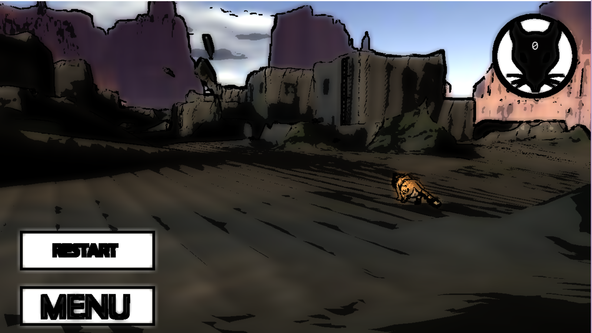
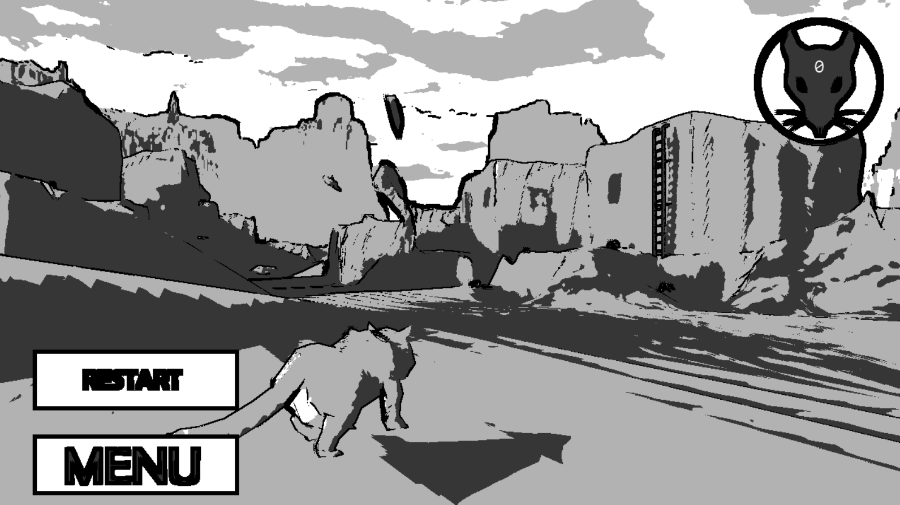

Post processing shader This shader was made for the Graphics Programming course in the DAE curriculum. It is able to reduce the scene in simple linework in post processing. The shader creates 3 types of lines, each with a different thickness. The shader looks at the difference of the minimum and maximum color values of 8 surrounding pixels to determin if the pixel should be part of a line. If the difference is bigger then 0.5 - a certain weight (each thickness has it's own weight) the pixel will turn into a line pixel. The surrounding pixels get sampled at a certain distance from the original distance, this allows to link smaller lines to more local (small sample distance) details and thicker lines to outline the main objects in the scene. Colors are blurred to give a water paint effect. It is also possible to produce a grayscale image that allows 4 shades of gray (including black and white), this is based on the brightness of the pixel. This value then get used for the colored image aswel, it gets multiplied with the blurred color. This makes brighter colors pop out more. Code snippet below the example images.  
float4 PS(PS_INPUT input) : SV_Target
{
...
//Parameters
float separation0 = 3.f;
float weight0 = 0.1f;
float separation1 = 1.f;
float weight1 = 0.37f;
float separation2 = 0.5f;
float weight2 = 0.43f;
//Define texture
float4 color = gTexture.Sample(samPoint, input.TexCoord);
uint2 size;
gTexture.GetDimensions(size.x, size.y);
////CALCULATE LINE
float4 minimum0 = float4(1, 1, 1, 1);
float4 maximum0 = float4(0, 0, 0, 0);
float4 minimum1 = float4(1, 1, 1, 1);
float4 maximum1 = float4(0, 0, 0, 0);
float4 minimum2 = float4(1, 1, 1, 1);
float4 maximum2 = float4(0, 0, 0, 0);
for (int x = -1; x <= 1; ++x)
{
for (int y = -1; y <= 1; ++y)
{
float4 color0 = gTexture.Sample(
samPoint,
float2(
input.TexCoord.x + x * separation0 / size.x,
input.TexCoord.y + y * separation0 / size.y));
minimum0 = min(color0, minimum0);
maximum0 = max(color0, maximum0);
float4 color1 = gTexture.Sample(
samPoint,
float2(
input.TexCoord.x + x * separation1 / size.x,
input.TexCoord.y + y * separation1 / size.y));
minimum1 = min(color1, minimum1);
maximum1 = max(color1, maximum1);
float4 color2 = gTexture.Sample(
samPoint,
float2(
input.TexCoord.x + x * separation2 / size.x,
input.TexCoord.y + y * separation2 / size.y));
minimum2 = min(color2, minimum2);
maximum2 = max(color2, maximum2);
}
}
float4 line = float4(0, 0, 0, 0);
float minBrightness;
float maxBrightness;
minBrightness = (minimum0.r + minimum0.g + minimum0.b) / 3;
maxBrightness = (maximum0.r + maximum0.g + maximum0.b) / 3;
line += round(weight0 + maxBrightness - minBrightness);
minBrightness = (minimum1.r + minimum1.g + minimum1.b) / 3;
maxBrightness = (maximum1.r + maximum1.g + maximum1.b) / 3;
line += round(weight1 + maxBrightness - minBrightness);
minBrightness = (minimum2.r + minimum2.g + minimum2.b) / 3;
maxBrightness = (maximum2.r + maximum2.g + maximum2.b) / 3;
line += round(weight2 + maxBrightness - minBrightness);
//CALCULATE BLUR COLOR
int blurRadius = 10;
float4 blurColor;
for (int i = -blurRadius; i <= blurRadius; i += 2)
{
for (int j = -blurRadius; j <= blurRadius; j += 2)
{
blurColor += gTexture.Sample(
samPoint,
float2(
input.TexCoord.x + (float) i / size.x,
input.TexCoord.y + (float) j / size.y));
}
}
blurColor /= ((blurRadius + 1) * (blurRadius + 1));
blurColor.w = 1;
//CALCULATE GRAY SHADING
float dark = min(0.3f + round((color.r + color.g + color.b)), 1.f);
dark *= min(0.7f + round((color.r + color.g + color.b) / 3), 1.f);
//CALCULATE OUTPUT
float4 output = float4(dark, dark, dark, 1);
output *= 1 - line;
output *= blurColor * 1.2f; //ADD COLOR
output.w = 1;
return output;
}